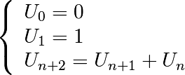

1.2.4. Defining functions¶
1.2.4.1. Function definition¶
In [56]: def test():
....: print('in test function')
....:
....:
In [57]: test()
in test function
Warning
Function blocks must be indented as other control-flow blocks.
1.2.4.2. Return statement¶
Functions can optionally return values.
In [6]: def disk_area(radius):
...: return 3.14 * radius * radius
...:
In [8]: disk_area(1.5)
Out[8]: 7.0649999999999995
Note
By default, functions return None.
Note
Note the syntax to define a function:
- the
defkeyword; - is followed by the function’s name, then
- the arguments of the function are given between parentheses followed by a colon.
- the function body;
- and
return objectfor optionally returning values.
1.2.4.3. Parameters¶
Mandatory parameters (positional arguments)
In [81]: def double_it(x):
....: return x * 2
....:
In [82]: double_it(3)
Out[82]: 6
In [83]: double_it()
---------------------------------------------------------------------------
Traceback (most recent call last):
File "<stdin>", line 1, in <module>
TypeError: double_it() takes exactly 1 argument (0 given)
Optional parameters (keyword or named arguments)
In [84]: def double_it(x=2):
....: return x * 2
....:
In [85]: double_it()
Out[85]: 4
In [86]: double_it(3)
Out[86]: 6
Keyword arguments allow you to specify default values.
Warning
Default values are evaluated when the function is defined, not when it is called. This can be problematic when using mutable types (e.g. dictionary or list) and modifying them in the function body, since the modifications will be persistent across invocations of the function.
Using an immutable type in a keyword argument:
In [124]: bigx = 10
In [125]: def double_it(x=bigx):
.....: return x * 2
.....:
In [126]: bigx = 1e9 # Now really big
In [128]: double_it()
Out[128]: 20
Using an mutable type in a keyword argument (and modifying it inside the function body):
In [2]: def add_to_dict(args={'a': 1, 'b': 2}):
...: for i in args.keys():
...: args[i] += 1
...: print(args)
...:
In [3]: add_to_dict
Out[3]: <function __main__.add_to_dict>
In [4]: add_to_dict()
{'a': 2, 'b': 3}
In [5]: add_to_dict()
{'a': 3, 'b': 4}
In [6]: add_to_dict()
{'a': 4, 'b': 5}
Tip
More involved example implementing python’s slicing:
In [98]: def slicer(seq, start=None, stop=None, step=None):
....: """Implement basic python slicing."""
....: return seq[start:stop:step]
....:
In [101]: rhyme = 'one fish, two fish, red fish, blue fish'.split()
In [102]: rhyme
Out[102]: ['one', 'fish,', 'two', 'fish,', 'red', 'fish,', 'blue', 'fish']
In [103]: slicer(rhyme)
Out[103]: ['one', 'fish,', 'two', 'fish,', 'red', 'fish,', 'blue', 'fish']
In [104]: slicer(rhyme, step=2)
Out[104]: ['one', 'two', 'red', 'blue']
In [105]: slicer(rhyme, 1, step=2)
Out[105]: ['fish,', 'fish,', 'fish,', 'fish']
In [106]: slicer(rhyme, start=1, stop=4, step=2)
Out[106]: ['fish,', 'fish,']
The order of the keyword arguments does not matter:
In [107]: slicer(rhyme, step=2, start=1, stop=4)
Out[107]: ['fish,', 'fish,']
but it is good practice to use the same ordering as the function’s definition.
Keyword arguments are a very convenient feature for defining functions with a variable number of arguments, especially when default values are to be used in most calls to the function.
1.2.4.4. Passing by value¶
Tip
Can you modify the value of a variable inside a function? Most languages (C, Java, …) distinguish “passing by value” and “passing by reference”. In Python, such a distinction is somewhat artificial, and it is a bit subtle whether your variables are going to be modified or not. Fortunately, there exist clear rules.
Parameters to functions are references to objects, which are passed by value. When you pass a variable to a function, python passes the reference to the object to which the variable refers (the value). Not the variable itself.
If the value passed in a function is immutable, the function does not modify the caller’s variable. If the value is mutable, the function may modify the caller’s variable in-place:
>>> def try_to_modify(x, y, z):
... x = 23
... y.append(42)
... z = [99] # new reference
... print(x)
... print(y)
... print(z)
...
>>> a = 77 # immutable variable
>>> b = [99] # mutable variable
>>> c = [28]
>>> try_to_modify(a, b, c)
23
[99, 42]
[99]
>>> print(a)
77
>>> print(b)
[99, 42]
>>> print(c)
[28]
Functions have a local variable table called a local namespace.
The variable x only exists within the function try_to_modify.
1.2.4.5. Global variables¶
Variables declared outside the function can be referenced within the function:
In [114]: x = 5
In [115]: def addx(y):
.....: return x + y
.....:
In [116]: addx(10)
Out[116]: 15
But these “global” variables cannot be modified within the function, unless declared global in the function.
This doesn’t work:
In [117]: def setx(y):
.....: x = y
.....: print('x is %d' % x)
.....:
.....:
In [118]: setx(10)
x is 10
In [120]: x
Out[120]: 5
This works:
In [121]: def setx(y):
.....: global x
.....: x = y
.....: print('x is %d' % x)
.....:
.....:
In [122]: setx(10)
x is 10
In [123]: x
Out[123]: 10
1.2.4.6. Variable number of parameters¶
- Special forms of parameters:
*args: any number of positional arguments packed into a tuple**kwargs: any number of keyword arguments packed into a dictionary
In [35]: def variable_args(*args, **kwargs):
....: print('args is', args)
....: print('kwargs is', kwargs)
....:
In [36]: variable_args('one', 'two', x=1, y=2, z=3)
args is ('one', 'two')
kwargs is {'x': 1, 'y': 2, 'z': 3}
1.2.4.7. Docstrings¶
Documentation about what the function does and its parameters. General convention:
In [67]: def funcname(params):
....: """Concise one-line sentence describing the function.
....:
....: Extended summary which can contain multiple paragraphs.
....: """
....: # function body
....: pass
....:
In [68]: funcname?
Type: function
Base Class: type 'function'>
String Form: <function funcname at 0xeaa0f0>
Namespace: Interactive
File: <ipython console>
Definition: funcname(params)
Docstring:
Concise one-line sentence describing the function.
Extended summary which can contain multiple paragraphs.
Note
Docstring guidelines
For the sake of standardization, the Docstring Conventions webpage documents the semantics and conventions associated with Python docstrings.
Also, the Numpy and Scipy modules have defined a precise standard
for documenting scientific functions, that you may want to follow for
your own functions, with a Parameters section, an Examples
section, etc. See
https://numpydoc.readthedocs.io/en/latest/format.html#docstring-standard
1.2.4.8. Functions are objects¶
- Functions are first-class objects, which means they can be:
- assigned to a variable
- an item in a list (or any collection)
- passed as an argument to another function.
In [38]: va = variable_args
In [39]: va('three', x=1, y=2)
args is ('three',)
kwargs is {'x': 1, 'y': 2}
1.2.4.9. Methods¶
Methods are functions attached to objects. You’ve seen these in our examples on lists, dictionaries, strings, etc…
1.2.4.10. Exercises¶
Exercise: Fibonacci sequence
Write a function that displays the n first terms of the Fibonacci
sequence, defined by:

Exercise: Quicksort
Implement the quicksort algorithm, as defined by wikipedia
function quicksort(array)
var list less, greater
if length(array) < 2
return array
select and remove a pivot value pivot from array
for each x in array
if x < pivot + 1 then append x to less
else append x to greater
return concatenate(quicksort(less), pivot, quicksort(greater))